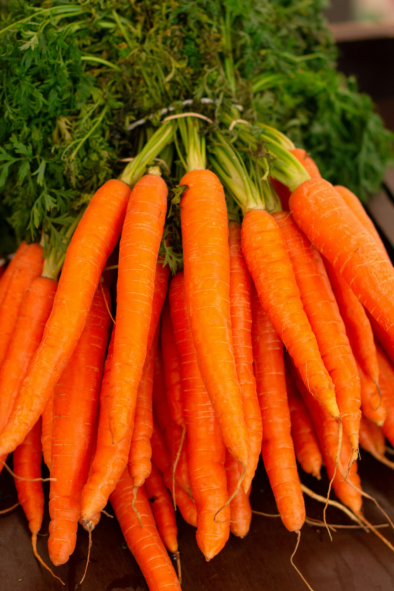

Gemeinsam gesund essen.
Werde Teil unserer solidarischen Landwirtschafts-Genossenschaft und geniesse wöchentlich frisches, lokales und saisonales Bio-Gemüse direkt vom Feld.

Unser Angebot
Kleine Tasche
Ideal für 1-2 Personen. Eine bunte Mischung aus saisonalem Gemüse für den wöchentlichen Bedarf.
CHF 25.– / Woche
Grosse Tasche
Perfekt für Familien oder WGs (3-4 Personen). Reichlich gefüllt mit allem, was unsere Felder hergeben.
CHF 40.– / Woche
Zusatz-Optionen
Ergänze dein Abo flexibel mit frischen Eiern von glücklichen Hühnern oder unserem Bio-Brot.
ab CHF 5.–
Häufig gestellte Fragen
Was bedeutet "solidarische Landwirtschaft"?
Solidarische Landwirtschaft (SoLaWi) bedeutet, dass eine Gruppe von Verbraucher:innen die Kosten eines landwirtschaftlichen Betriebs trägt und dafür im Gegenzug die gesamte Ernte erhält. Das Risiko wird geteilt und es entsteht eine direkte, transparente Beziehung zwischen Produzent:innen und Konsument:innen.
Wie und wo kann ich mein Gemüse abholen?
Dein Gemüse kannst du wöchentlich in einem unserer Depots in der Region abholen. Nach der Anmeldung erhältst du eine Liste aller Standorte und kannst dein bevorzugtes Depot auswählen.
Muss ich auf dem Hof mitarbeiten?
Die Mithilfe ist freiwillig, aber sehr willkommen! Wir organisieren regelmässig Mitmachtage, an denen du das Team kennenlernen und selbst Hand anlegen kannst. Es ist eine tolle Möglichkeit, den Bezug zur Lebensmittelproduktion zu stärken.